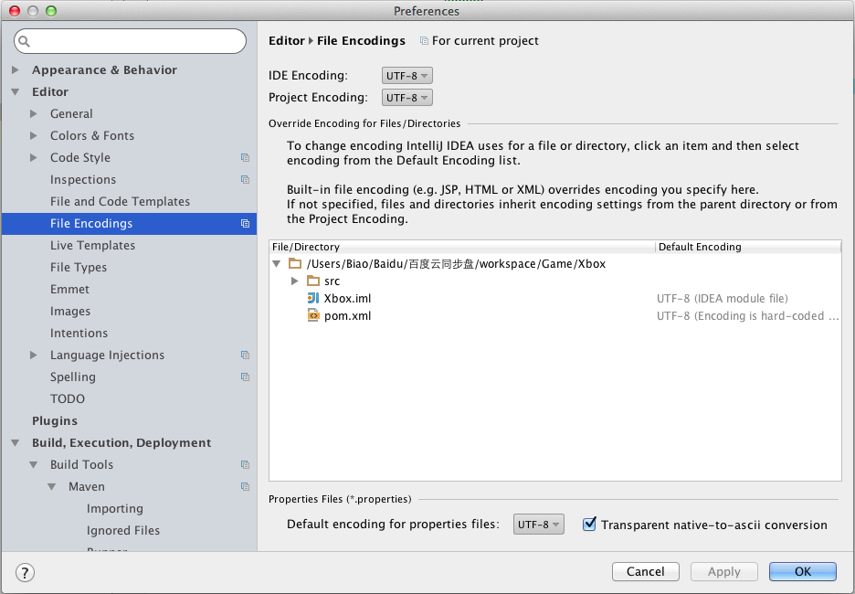

字符集主要涉及 2 个方面
- 文件本身的字符集（文件，数据库存储使用，返回给浏览器端的 html 内容）
- 程序中编码解码时候使用的字符集（如解析 http 请求的数据）
为了防止乱码，我们规定：所有的字符集都用 UTF-8。
1. IDEA 设置字符集
IDEA Encoding, Project Encoding, Properties Encoding 都使用 UTF-8，这样 IDEA 里创建的文件都是 UTF-8 编码的。

2. JSP 中字符集的设置
1 | <%@ page contentType="text/html;charset=UTF-8" language="java" %> |
3. HTML 中字符集的设置
1 | <head> |
4. Tomcat 处理 GET 请求的字符集设置
前台网页的 GET 请求以 UTF-8 来解析，pom.xml 里设置 uriEncoding
1 | <Connector port="8080" protocol="HTTP/1.1" |
5. Tomcat 处理 POST 请求的字符集设置
前台网页的 POST 请求以 UTF-8 来解析，web.xml 加上字符集的 filter 处理 POST 的中文
1 | <!-- 处理 POST 的中文 --> |
6. Thymeleaf 模版生成文件的字符集设置
1 | <bean class="org.thymeleaf.spring5.view.ThymeleafViewResolver"> |
7. AJAX 返回有乱码?
由处理 @ResponseBody 返回字符串的 MessageConverter 的编码设置造成的，配置 springmvc-servlet.xml 中的 MessageConverter（去掉 mvc:annotation-driven/）
1 | <!-- 默认的注解映射支持 --> |
8. 数据库的字符集设置
创建数据库的时候，选择 Encoding 为 UTF-8
9. 配置 JDBC 连接数据库的字符集为 UTF-8
1 | jdbc:mysql://localhost:3306/test?useUnicode=true&characterEncoding=UTF-8 |
10. 使用 UTF-8 启动 Web Server(Tomcat)
10.1. Unix Like 配置 Tomcat
在 Tomcat 启动文件 catalina.sh 中加一个 -Dfile.encoding=UTF-8
1 | JAVA_OPTS="$JAVA_OPTS -Dfile.encoding=UTF-8" |
10.2. Windows 配置 Tomcat
在 Tomcat 启动文件 catalina.bat 中加一个 -Dfile.encoding=UTF-8
1 | set "JAVA_OPTS=%JAVA_OPTS% -Dfile.encoding=UTF-8" |